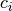
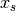
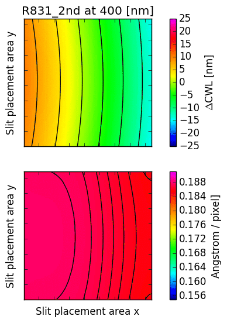

16. Appendix: GMMPS wavelength overlays¶
GMOS is a highly versatile spectrograph with interchangable gratings, and adjustable central wavelength (CWL) settings. Optical aberrations introduce significant non-linear dependencies. A MOS mask with 135 slits evenly covering the slit placement area was observed with all gratings, stepping from 380nm to 950nm. Wavelength solutions were obtained for each slit. In total, 17224 arc spectra were calibrated.
{kind=link}
Fig. 16.1 A special mask was cut with 135 evenly spaced slits to determine the wavelength models for GMOS.

Fig. 16.2 A typical arc spectrum obtained using the special mask, observed with the B600 grating.
16.1. Nonlinear model (per grating)¶
Up to 80 arc lines per slit were matched with a reference line catalog, and a third order polynomial was fit to the arc spectrum with a typical accuracy of 0.15 pixel for both GMOS-N and GMOS-S. The wavelength at a certain detector position depends on the slit position and the chosen central wavelength, . Each grating is modeled independently using a cubic polynomial:
The coefficients  themselves have a cubic dependence on , and a quadratic dependence on , the latter describing the typical curved appearance of the GMOS arcs:
with
and a quadratic dependence on :
In total, there are 60 free parameters per grating. The models are accurate to about 1 Angstrom, and mostly limited by the grating mechanism and its calibrating equation (yielding a typical accuracy of one or a few nm, usually smaller than the wavelength interval cut out by the detector gaps). To be conservative, one should assume that the wavelength uncertainty is comparable to the detector gap width.
16.2. CWL displacement and dispersion factor¶
The following images illustrate the behaviour of just two low order descriptors derived from the mathematical models for each of the gratings. The square panels represent the slit placement area for GMOS, about pixel wide.
The first descriptor is the offset of the central wavelength from the slit position, displayed in the upper panel. If the anamorphic factor was equal to , then the central wavelength would appear at the slit position. For , the central wavelengths are offsets inwards, towards the central column of the GMOS detector array; for , they are pushed outwards. The contour lines reflect the typical curvature observed in GMOS longslit arcs. It can be seen that the anamorphic factor is highly non-uniform across the GMOS detector array, and also strongly dependent on central wavelength.
The second descriptor is the spectral dispersion factor measured at the slit position (lower panel in each figure). Again, it is evident that the dispersion depends signifcantly on the position of the slit as well as the central wavelength.
{kind=link}

{kind=link}
Fig. 16.3 CWL offset and dispersion factor for R150, R400 and R831.
{kind=link}
{kind=link}
{kind=link}
Fig. 16.4 CWL offset and dispersion factor for R831 (2nd order), B600 and B1200.
16.3. Residuals of the wavelength maps¶
The CWL is chosen by sending a certain tilt angle to the grating mechanism. The grating calibration equation, which ultimately relates CWL and tilt angle, is updated infrequently; an effort has been made at Gemini-North for more frequent updates. As a result, the wavelength maps displayed by GMMPS may be offset by small amounts (on the order of a nm, or less than a detector gap width) with respect to the currently established calibration. This is uncritical, as the models allow accurate (within about one nm) placement of the wavelengths on desired detector positions with GMMPS.
For GMOS-S, the two figures below show the differences between the observed central wavelength and the commanded central wavelength, for a slit at the detector center where anamorphic displacement is zero. The residuals are shown in Angstrom and (unbinned) pixels, respectively. The gratings were stepped through the CWLs continuously without interruption.

{kind=link}
Fig. 16.5 CWL residuals for GMOS-S, in Angstrom (left) and unbinned pixels (right).
R150: Shows a CWL oscillation of 80 nm, which is of little relevance because of the grating’s low spectral resolution. The amplitude corresponds to about 40 pixel.
R400: The CWL is reproduced within 1 nm across the entire wavelength range.
R831: The CWL is reproduced within 0.5 nm across the entire wavelength range. In 2nd order mode, the CWL for the R831 is badly reproduced between 475 and 550nm, which is currently under investigation. This is critical, because the second order of the R831 grating has high blue sensitivity (comparable to the B1200, but with 40% higher resolution).
B600: Shows an oscillation with an amplitude of about 2 nm (30 pixel) and periodicity of about 90-100 CWL nm. The cause of this is unknown, perhaps a mechanical issue with the grating mechanism. Note that 2 nm is still smaller than the detector gap width.
B1200: The CWL is reproduced within 0.5 nm over its commonly used range. At wavelengths redder than 750 nm (where the grating is inefficient), large deviations occur.
Note
While these systematic offsets are easily measured, they are not reflected in the mathematical models which use a quadratic polynomial, only, to describe the CWL dependence of the wavelength solutions.
Wavelength mapping for GMOS-N is pending. For the time being, the same models as for GMOS-S are used, because the optics are very similar.
16.4. CWL repeatability¶
To study the long-term repeatability of the CWL, GMOS-N and GMOS-S long-slit archival data (taken over several years) were analyzed. The histograms below show the difference between the requested CWL and the observed CWL for both instruments, in nm (top) and pixels (2x binning in spectral direction).
For GMOS-S and the B600 it is on the order of 0.2 nm (with a few notable outliers), suggesting that the 2 nm oscillation observed with the MOS data in December 2016 has a more recent origin.
Note that the R150, R831 and B1200 gratings are interchanged frequently, whereas the R400 and the B600 are permanently installed. Further comments in the Figure captions.
{kind=link}
{kind=link}
Fig. 16.6 Repeatability of the CWL setting. Shown is the difference between the observed CWL and the requested CWL for GMOS-N (left) and GMOS-S (right). Data for GMOS-N were taken between January 2012 and April 2016, and for GMOS-S between August 2014 (commissioning of the GMOS-S Hamamatsu detectors) and April 2016. Used were all available arcs taken with 2x2 binning, central spectrum readout, and slit widths of 1 arcsecond or less.
{kind=link}
Fig. 16.7 Repeatability of the CWL setting. Same as above, but normalized by the grating dispersion. The histograms appear mirrored compared to the plot above, because the dispersion is negative (wavelengths increase towards lower detector coordinates).